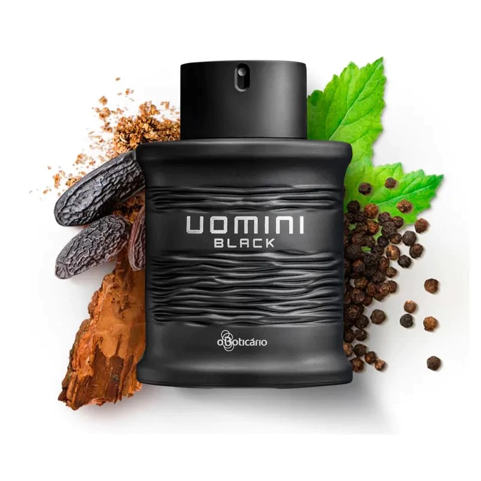
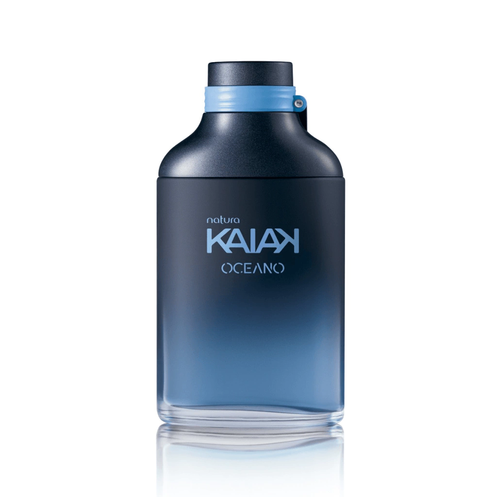
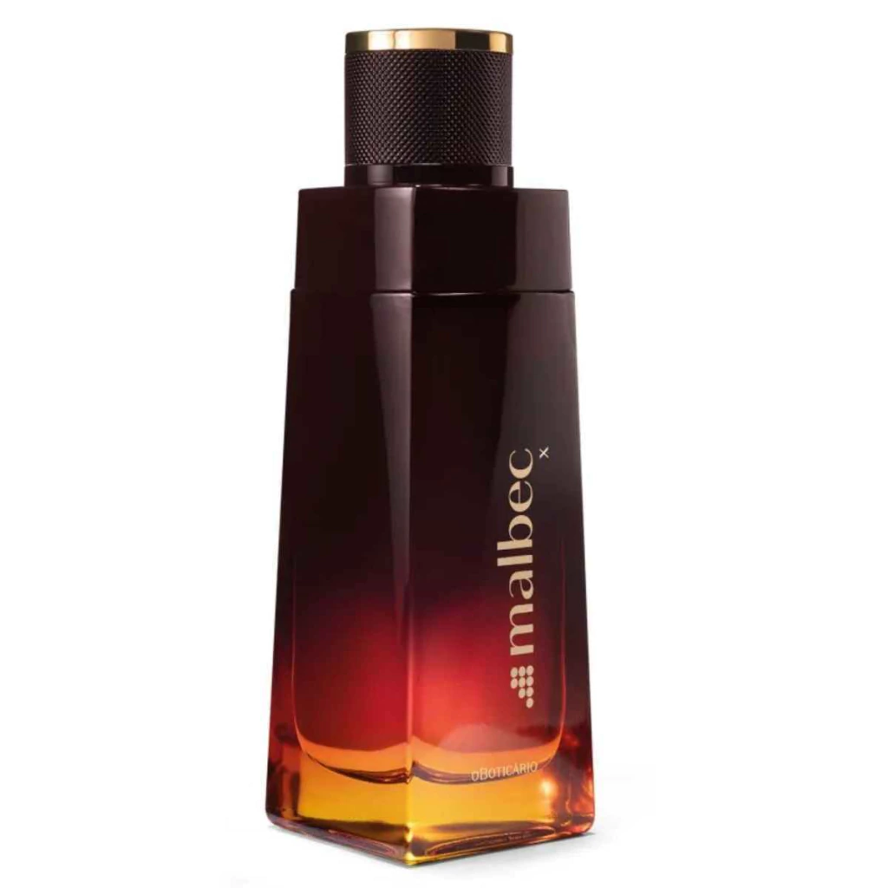

marcas"boticario,eudora,avon"
Umini BLACK

O Uomini Black é uma fragrância masculina que combina notas de especiarias e um toque ambarado, ideal para homens que desejam viver a vida de maneira intensa. A fragrância é descrita como oriental especiada, com notas quentes de especiarias e um toque ambarado que proporciona uma sensação de intensidade e sofisticação. O Uomini Black é uma escolha perfeita para homens que buscam uma fragrância marcante e que se jogue de cabeça na vida.
R$308,00
Kaiak

="120"
O perfume Kaiak da Natura é uma fragrância que une frescor e aventura, inspirada na natureza e no espírito explorador. Ele é ideal para homens que buscam um perfume versátil, refrescante e cheio de personalidade. As notas de topo incluem cítricos vibrantes como limão, bergamota e mandarina, que trazem um impacto inicial refrescante. As notas de coração são um ponto forte do Kaiak, onde o frescor das notas aquáticas encontra o toque herbal, oferecendo um tom herbal suave e uma sensação de serenidade. O perfume é uma homenagem à biodiversidade brasileira e utiliza ingredientes da biodiversidade brasileira, além de embalagens sustentáveis.
- preço: R$:209,00
Floratta
sensação: "é um perfume romatico ,mas com muita atitude.ele não passa despercebido"
o cheiro dele na pele: "ele abre com azedinho suculeto de frutas vermelhas e maça,depois fica cremoso com flores brancas e traz um fundo supriendente e delicioso de chocolate amargo com baunilha/ãmbar"
- preço: R$ 149,90
Eudora Velvet Cristal
Discrição do perfume velvet cristal feminino
O perfume Eudora Velvet Cristal feminino é descrito como um perfume âmbar floral que combina notas de frutas suculentas, flores sofisticadas e um fundo doce de caramelo e baunilha. A fragrância é inspirada no "veludo cristal" e é caracterizada por sua suavidade, feminilidade e luminosidade. O design do frasco é um ponto forte, com um formato que lembra um cristal lapidado, o que complementa a proposta da fragrância. O produto é considerado de bom custo-benefício, com preço abaixo de R$ 150,00, e é bem avaliado por sua fixação e projeção.
- R$ 120,00
Malbec

R$ 240,00